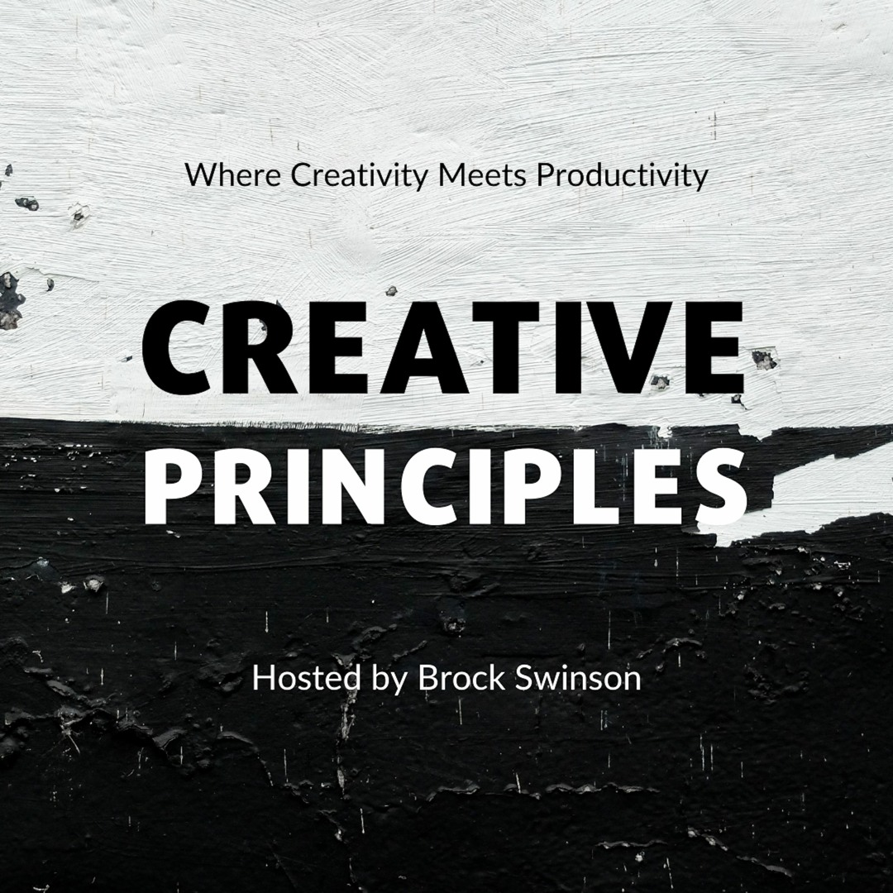
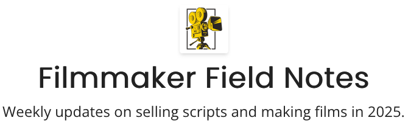

brock swinson
goals
At 37, an aspiring screenwriter often reconnects with the youthful fervor that first ignited their passion for storytelling while embracing the discipline and strategic focus that only years of life experience can deliver. Their primary goal is to refine a distinctive voice—one that reflects unique perspectives shaped by years of observation and personal growth—so that their scripts stand out in a crowded marketplace. They strive to complete a compelling feature-length spec script that captures emotional truth, dramatic tension, and commercially viable hooks, all while adhering to industry formats and expectations. Simultaneously, they're building a professional network through writers' groups, screenwriting workshops, and industry events, aiming to foster relationships with peers, mentors, and potential producers or agents. Financial stability remains a practical concern, so balancing day-to-day employment with dedicated writing routines—waking early or carving out weekend marathons—also ranks high on the list. They aim to stay abreast of evolving distribution platforms, understanding how streaming services, short-form web series, podcasts, and virtual film festivals can serve as launchpads for emerging voices. They might set goals for measurable milestones—submitting to ten competitions in a year, completing monthly outlines, or securing at least three professional script notes. Ultimately, their overarching mission is to transform passion into profession: to see their characters leap off the page, to watch their stories come alive on screen, and to forge a sustainable career that marries creative fulfillment with industry recognition. Alongside creative ambitions, they set personal deadlines and hold themselves accountable to cultivate consistency, ongoing momentum, and sustainable growth.
accomplishments
| Year | Activity |
|---|---|
| 2009 | Background work on One Tree Hill |
| 2010 | Creative Screenwriting Magazine (to present) |
| 2012 | Managed Free Bee, a local newspaper |
| 2013 | Editor in Chief at Rogue Valley Messenger |
| 2014 | Worked on TV shows, commercials, and music video sets in LA |
| 2015 | Began freelance writing and marketing for Russell Brunson at ClickFunnels and others |
| 2023 | Co-founder of Buzztown, a screenwriting and filmmaking community |
| 2023 | Founder of Blue Whistler Films |
- 2009 - Background work on One Tree Hill
- 2010 - Creative Screenwriting Magazine (to present)
- 2012 - Managed Free Bee, a local newspaper
- 2013 - Editor in Chief at Rogue Valley Messenger
- 2014 - Worked on TV shows, commercials, and music video sets in LA
- 2015 - Began freelance writing and marketing for Russell Brunson at ClickFunnels and others
- 2023 - Co-founder of Buzztown, a screenwriting and filmmaking community
- 2023 - Founder of Blue Whistler Films
creative work
Brock's creative journey spans multiple mediums and industries, from traditional journalism to modern digital marketing and screenwriting. His work with Russell Brunson at ClickFunnels demonstrated his ability to craft compelling narratives that drive engagement and conversion. This experience in marketing copywriting has directly influenced his screenwriting approach, where he focuses on creating emotionally resonant stories with clear dramatic stakes. His background in journalism has honed his ability to research deeply and present complex information in accessible ways, skills that translate beautifully to script development and character research. The founding of Buzztown represents his commitment to building community among fellow creatives, recognizing that the best work often emerges from collaboration and shared learning. His role as Editor in Chief at Rogue Valley Messenger showcased his leadership abilities and editorial judgment, qualities that serve him well as he develops his own production company, Blue Whistler Films. This entrepreneurial spirit, combined with his artistic vision, positions him uniquely in the industry as someone who understands both the creative and business aspects of filmmaking.
filmmaking
Brock's hands-on experience in the film industry began with background work on One Tree Hill, giving him firsthand insight into the collaborative nature of television production. His time working on various TV shows, commercials, and music video sets in Los Angeles provided invaluable exposure to different production scales and creative processes. This practical experience informs his writing, as he understands the realities of production constraints and the importance of writing scripts that can actually be filmed within budget and logistical limitations. His work with Blue Whistler Films represents the culmination of years of industry observation and learning, as he now has the opportunity to shepherd projects from concept to completion. The Filmmaker Field Notes project demonstrates his commitment to documenting and sharing knowledge with the broader filmmaking community, reflecting his belief in the importance of mentorship and knowledge transfer in creative industries. His approach to filmmaking emphasizes authentic storytelling, technical excellence, and community building, recognizing that successful projects require both artistic vision and practical execution.